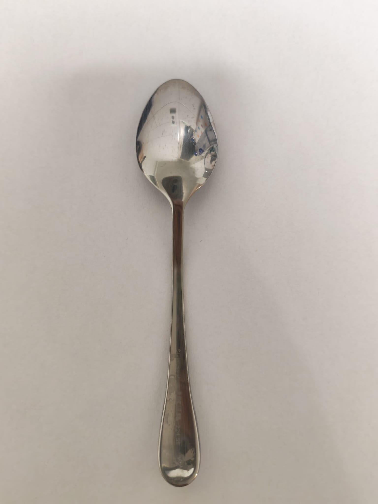
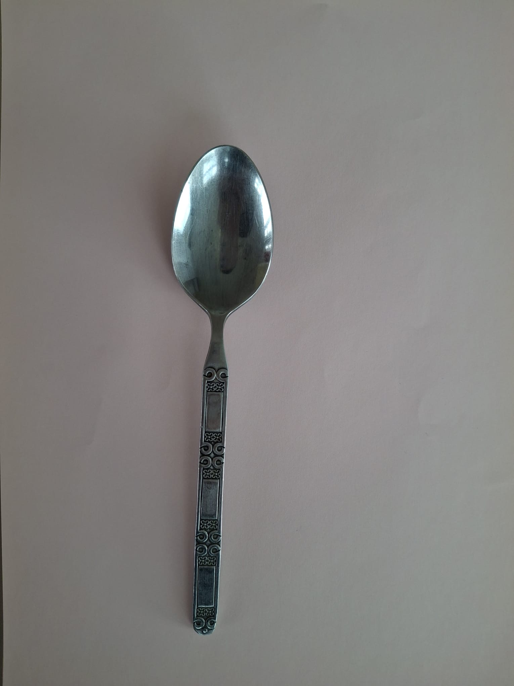
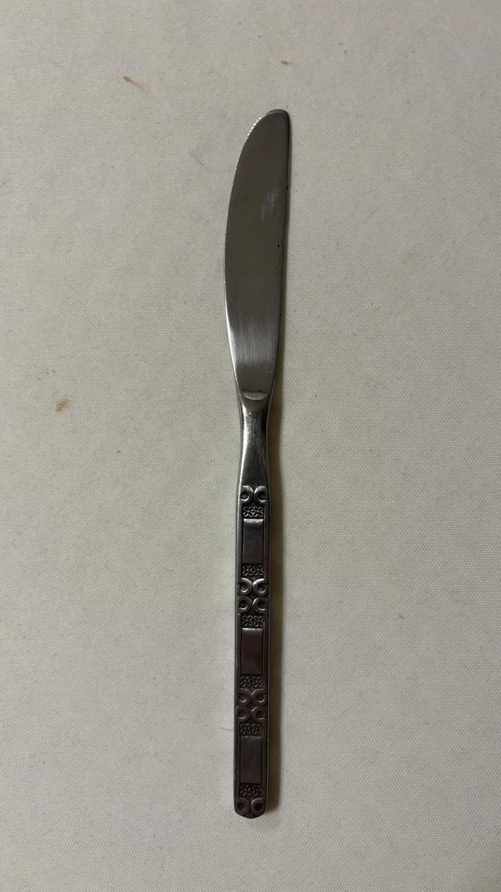

Spoon Knives
Knife vs Spoon image classifier — 97% balanced accuracy from 31 hand-photographed images, using custom geometric features and K-Nearest Neighbors. No deep learning, no pre-trained weights — just engineered features and an interpretable pipeline.
The dataset
31 photographs of kitchen utensils — knives and spoons — on a white background. Hand-assembled to control lighting and noise; small enough to feel honest, large enough to train a real classifier.






The pipeline
- Load and display the dataset — every image is read from disk and previewed.
- Preprocess — foreground detection isolates the utensil; a center crop normalizes scale.
- Extract features — six custom geometric descriptors capture shape.
- Train and compare several classifiers with cross-validation.
- Evaluate the best model with a confusion matrix on held-out data.
Feature engineering
Each image is reduced to six interpretable numbers — no black-box embeddings, no transfer learning:
- Elongation — ratio of major to minor axis of the silhouette.
- Roundness — how close the outline is to a circle.
- Width variation — standard deviation of cross-sectional width along the utensil.
- Top symmetry — whether the upper half mirrors itself.
- Bottom symmetry — same, for the lower half.
- Template-match scores — correlation against canonical knife / spoon shapes.
Foreground detection
Before features can be extracted, the utensil has to be separated from the background. The utilities.py module experiments with several approaches:
- Redness-based filtering —
D = R − (G + B) / 2, picks out warm pixels. - Brightness-based filtering —
V = (R + G + B) / 3, picks out dark pixels against a white background. - Gaussian-smoothed edge detection with iterative dilation.
- Flood-fill from the object centroid.
- Mask dilation with neighbor-threshold logic.
Method
K-Nearest Neighbors, validated with 10-fold stratified cross-validation. Hyperparameters tuned on the training folds only — no information leak from the test set.
Context
Built for Introduction à la Science des Données at Université Paris-Saclay. The point wasn't to beat a CNN — it was to feel the full pipeline from raw pixels to a working classifier, end-to-end, with no leaks.